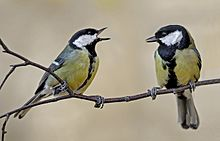
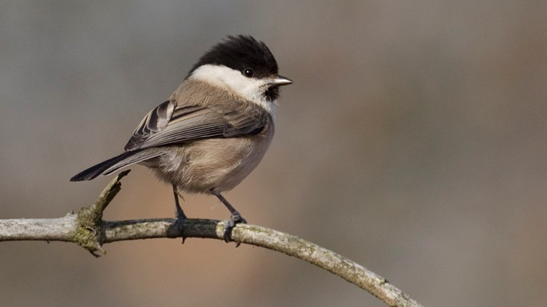
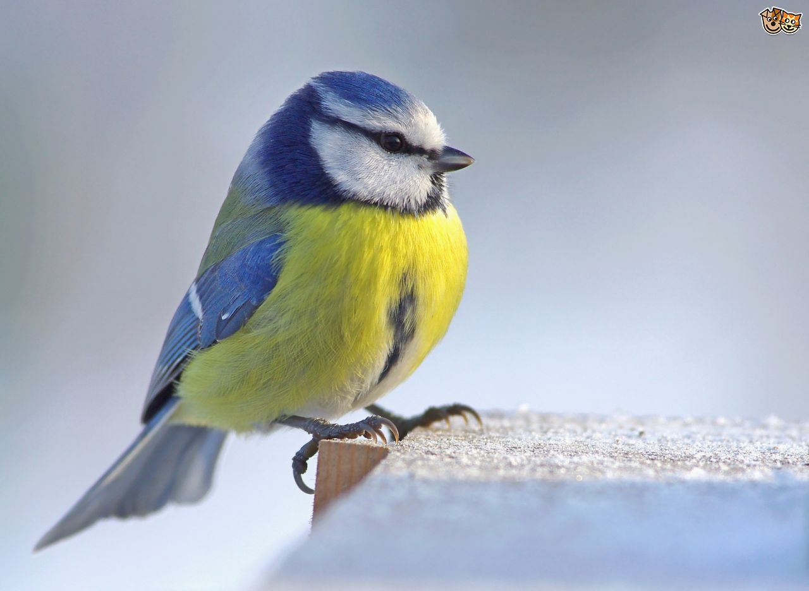
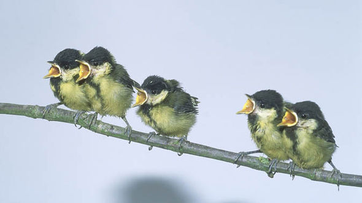
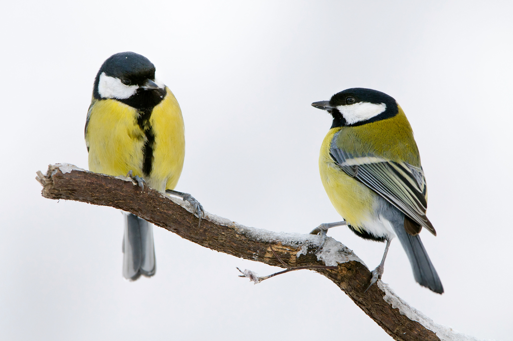
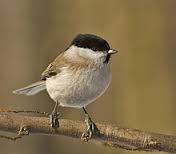
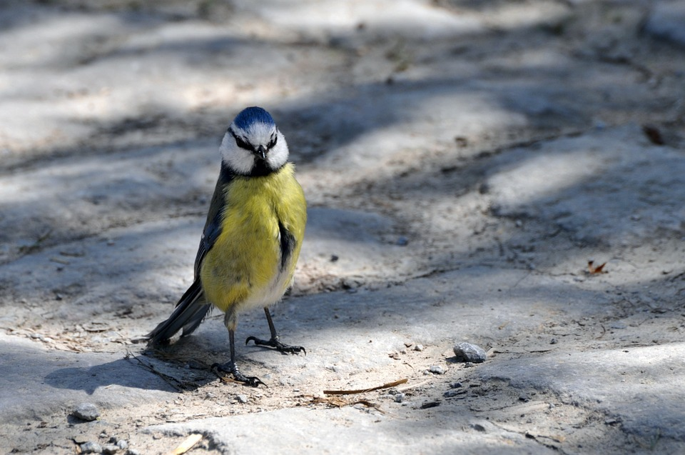
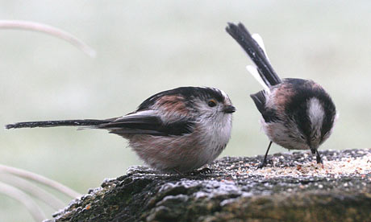

<DOCTYPEhtml!>
<html>
  <title>
    tatas
  </title>
  <style>
  #bottom{
    width: 344;
    display: block;
    margin: 0 auto;
    border-left: 5px solid #ddd;
    border-right: 5px solid #ddd;
    border-bottom: 5px solid #ddd;
  }
  #top{
    width: 344;
    display: block;
    margin: 0 auto;
    border-left: 5px solid #ddd;
    border-right: 5px solid #ddd;
    border-top: 5px solid #ddd;
  }
    img {
      width: 344;
      display: block;
      margin: 0 auto;
      border-left: 5px solid #ddd;
      border-right: 5px solid #ddd;
    }
    body {
      background-image: url('assest/tit background');
      background-repeat: no-repeat;
      background-attachment: fixed;
      background-size: cover;
    }
  </style>

  <body>
    
    
    
    
    
    
    
    
    
    
    
    
    
    
    
    
    
  </body>

</html>

